コマンドを追加する 3 つの方法
ダブルクリック、ドラッグ&ドロップ、Insert キー。そして、コマンドを狙った場所に正確に置く方法。
手順#
- 1
ダブルクリック。 コマンドを入れたい位置の直前の行を選択し(1)、イベント 一覧でコマンドをダブルクリックします(2)。新しい行は選択した行のすぐ下に入ります。ここでは
camera ( MOVE )の後ろにwaitが入っています。オリジナルの BehavEd と同じ動作です。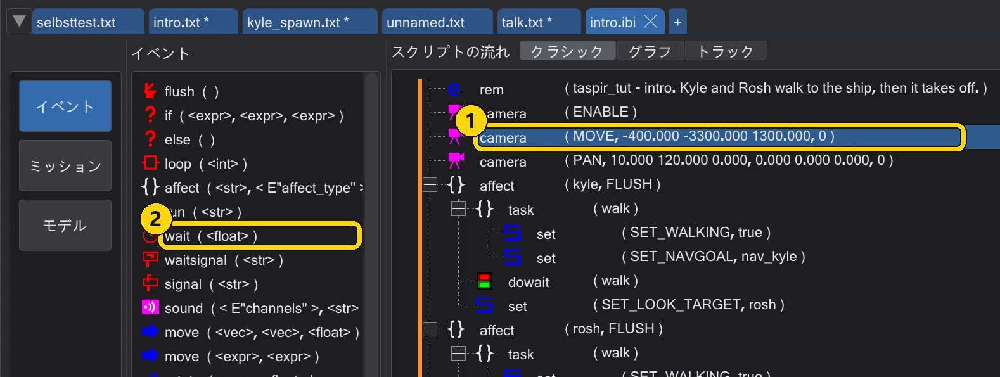
1:選択した行。2:一覧のコマンド。 - 2
Insert キー。 一覧でコマンドを 1 回クリックすると、ハイライトされたままになります(1)。ツリーで行を選択し(2)、Insert を押します。同じコマンドを何度も追加するときに便利です。選択、Insert、選択、Insert……
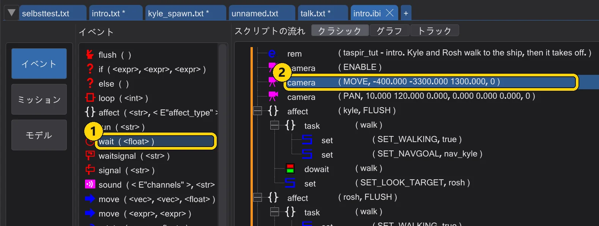
1:一覧で選択されたままのコマンド。2:挿入先。 - 3
ドラッグ。 一覧のコマンド(1)をツリーの行(2)へドラッグします。ドラッグ中は、どこに入るかを線が示します。行の上、行の下、または開いたブロックの中央ならブロックの中です。
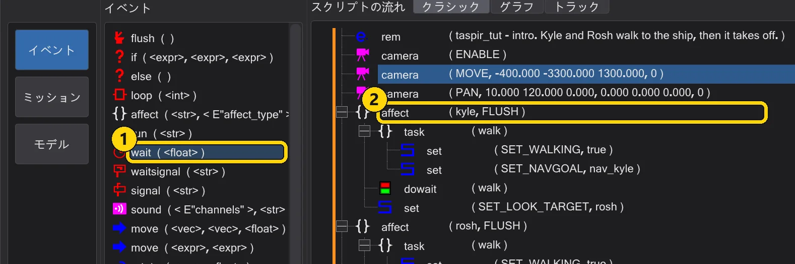
一覧(1)からツリー(2)へドラッグ。 - 4
右クリック。 ツリーの行を右クリックすると、サブメニュー イベント と マクロ にすべてのコマンドが並びます。クリックしたコマンドはその行の後ろに挿入されます。開いたブロックを右クリックした場合はブロックの中に入ります。
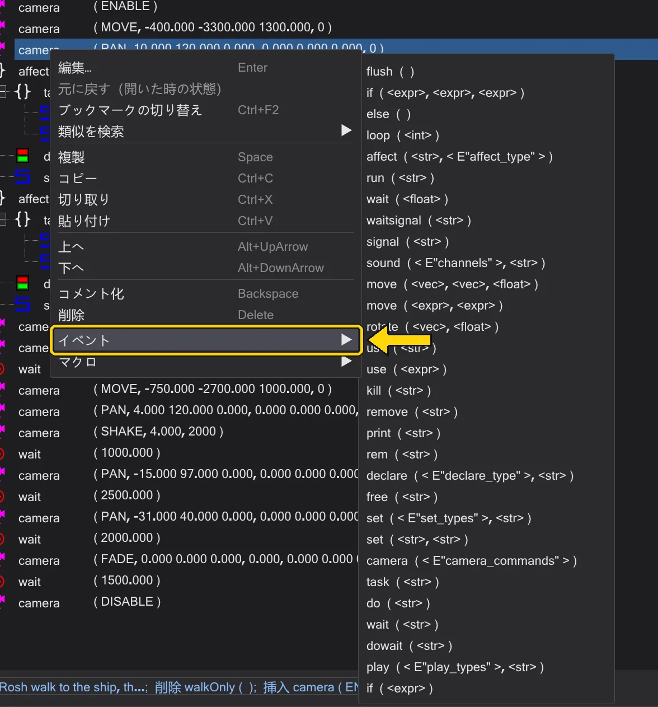
行のコンテキストメニューとイベントのサブメニュー。


- 1
コマンドの場所。 グラフ でスクリプトノードをクリックします(最初は開いているスクリプトが選択されています)。右の このスクリプトのコマンド に、そのスクリプトのコマンドがすべて表示されます。ブロックは字下げされます。行をクリックで選択、ダブルクリックで編集、右クリックでメニューです。
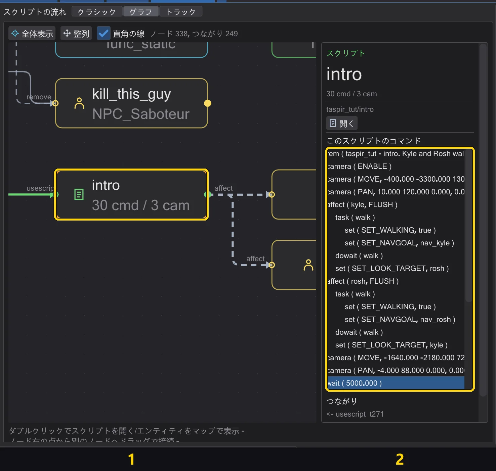
開いているスクリプトのノード(1)とそのコマンド(2)。 - 2
イベント一覧でダブルクリック。 右の行(1)をクリックし、イベント 一覧のコマンド(2)をダブルクリックします。その行の後ろに挿入されます。行が開いたブロックなら、ブロックの中に入ります。
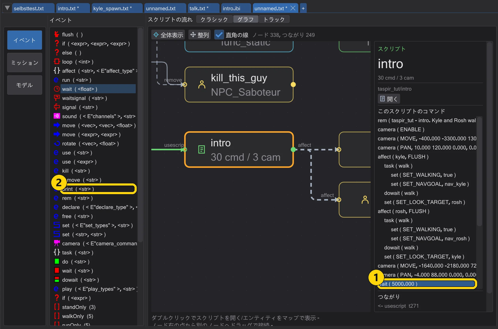
1:選択した行。2:イベント一覧のコマンド。 - 3
行へドラッグ。 イベント 一覧(1)からコマンドを このスクリプトのコマンド の行(2)へドラッグします。その行のすぐ後ろに入ります。
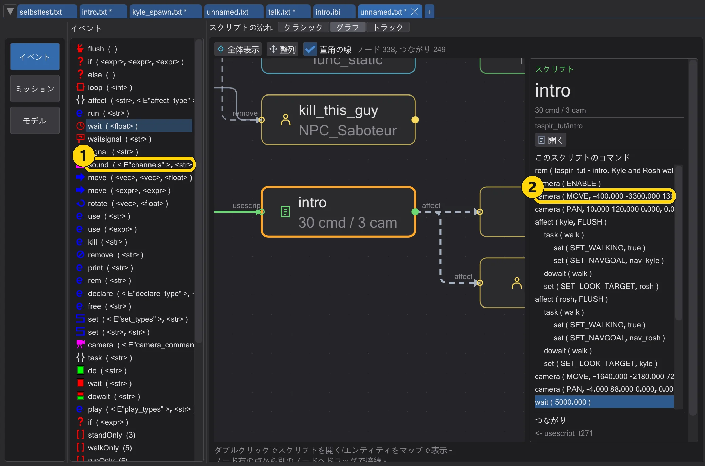
1:コマンド。2:その後ろに入る行。 - 4
ノードへドラッグ。 グラフのスクリプトノード(2)にドロップすると、コマンドはそのスクリプトの最後に入ります。空いている場所にドロップすると、新しいスクリプトが始まります。
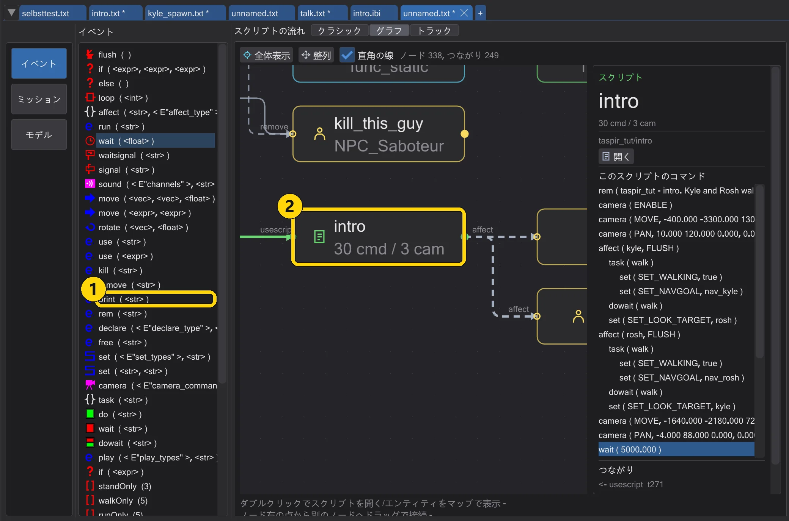
1:コマンド。2:スクリプトノード。コマンドはその最後に入ります。 - 5
右クリック。 右の行を右クリックします。サブメニューの イベント と マクロ で、その行の後ろに挿入できます。クラシックと同じメニューです。
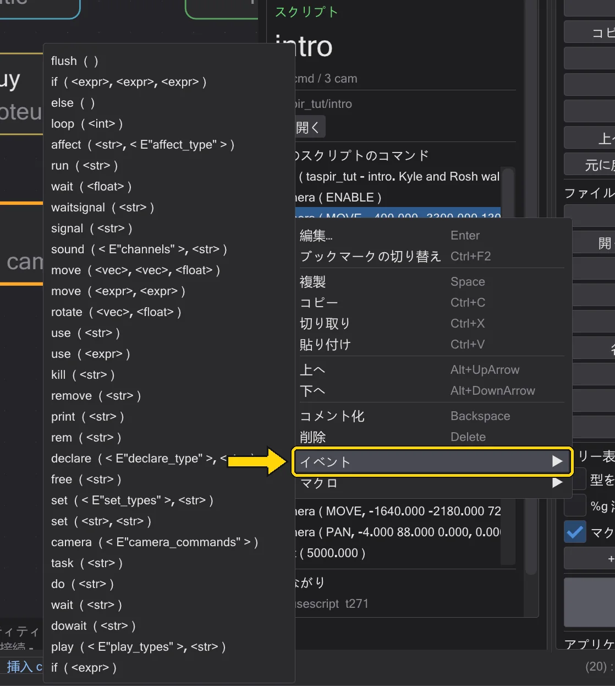
グラフでの行のメニューと、そのイベントのサブメニュー。


- 1
コマンドの場所。 トラック はスクリプトを時間軸で表示します。カメラ、キャラクターごとに 1 行、待ち時間です。右の コマンド一覧 には、
affect、task、declareのような時間のかからないものも含め、すべてのコマンドが表示されます。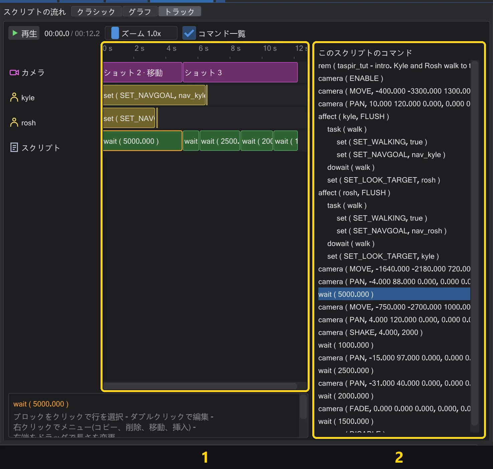
1:タイムラインの行。2:コマンド一覧。 - 2
イベント一覧でダブルクリック。 ブロックか一覧の行(1)をクリックし、イベント 一覧のコマンド(2)をダブルクリックします。選択したコマンドのすぐ後ろに入ります。
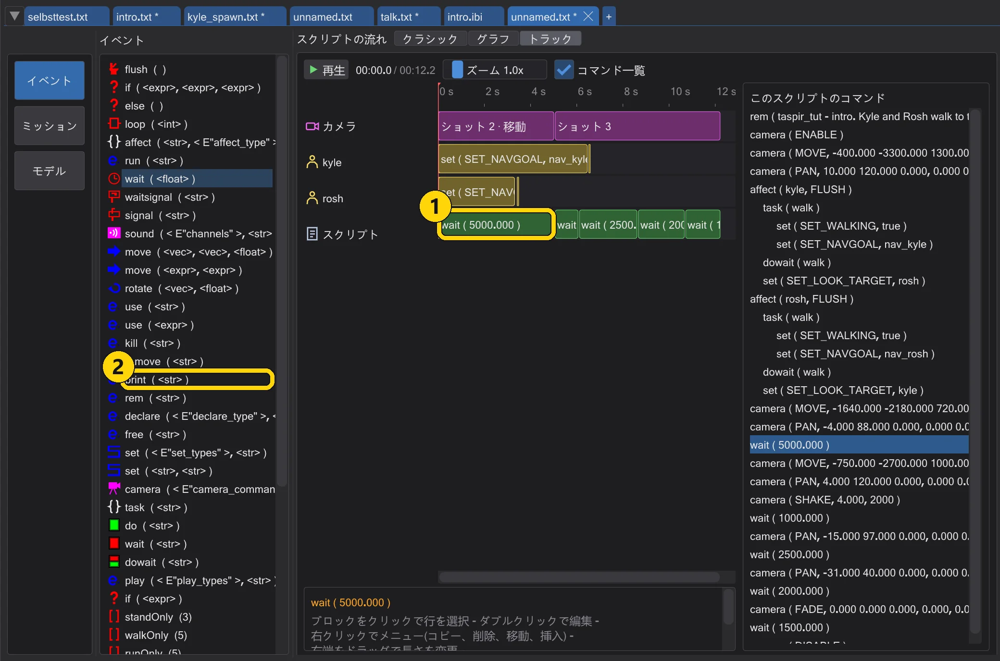
1:選択したブロック。2:イベント一覧のコマンド。 - 3
行のある時刻へドラッグ。 イベント 一覧(1)からコマンドをタイムラインの行(2)へドラッグします。黄色い線がその時刻を示します。コマンドは、その行で線より前に始まる最後のコマンドの後ろに入ります。キャラクターの行なら、そのキャラクターの
affectブロックの中です。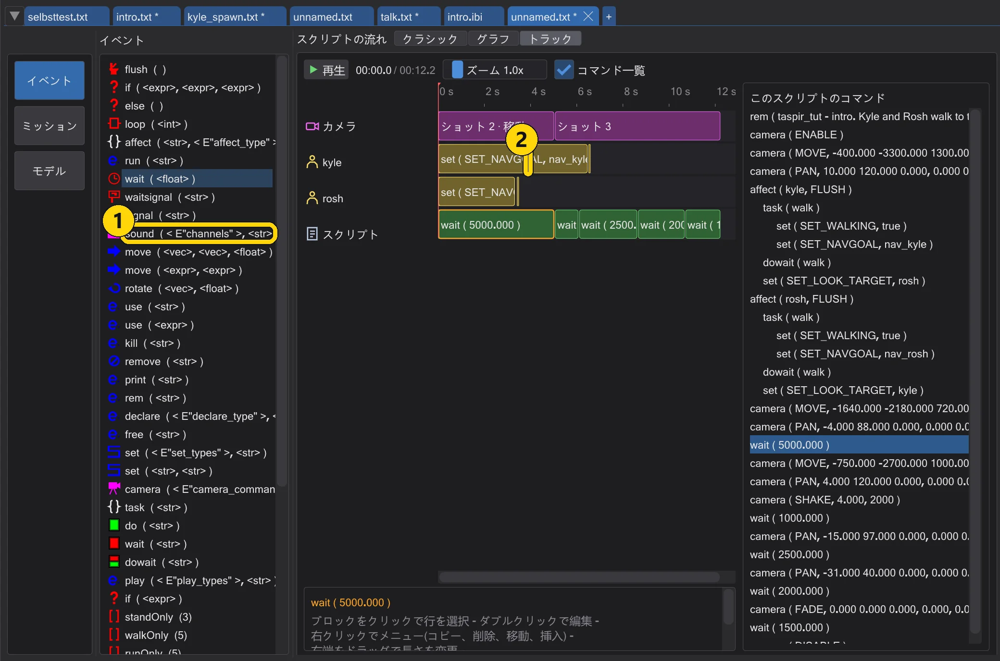
1:コマンド。2:Kyle の行の時刻。 - 4
一覧へドラッグ。 時間のないコマンド(
affect、task、declare)は右の一覧(2)へドラッグします。ドロップした行の後ろに入り、空いている場所なら最後に入ります。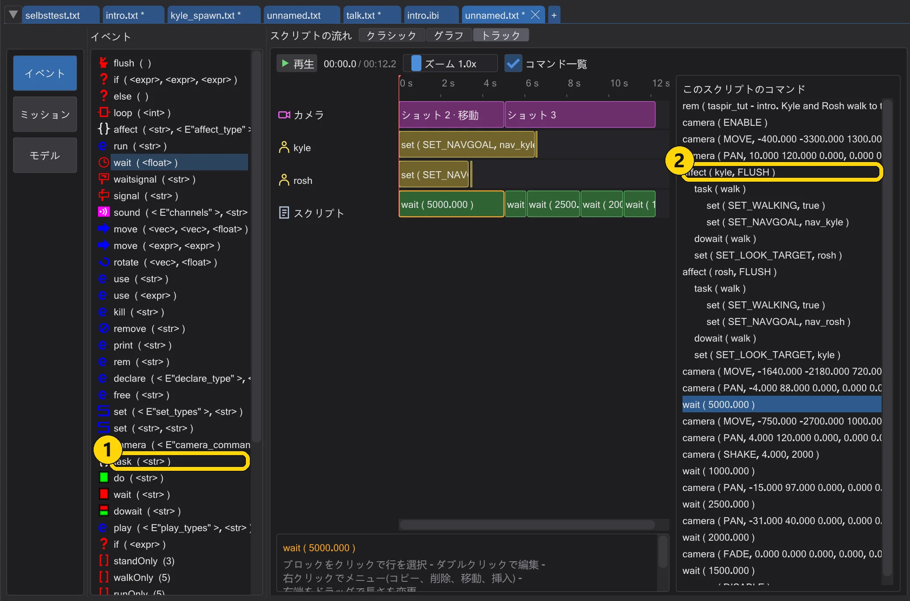
1:コマンド。2:コマンド一覧の行。 - 5
右クリック。 ブロック(または一覧の行)を右クリックします。イベント と マクロ でその後ろに挿入できます。
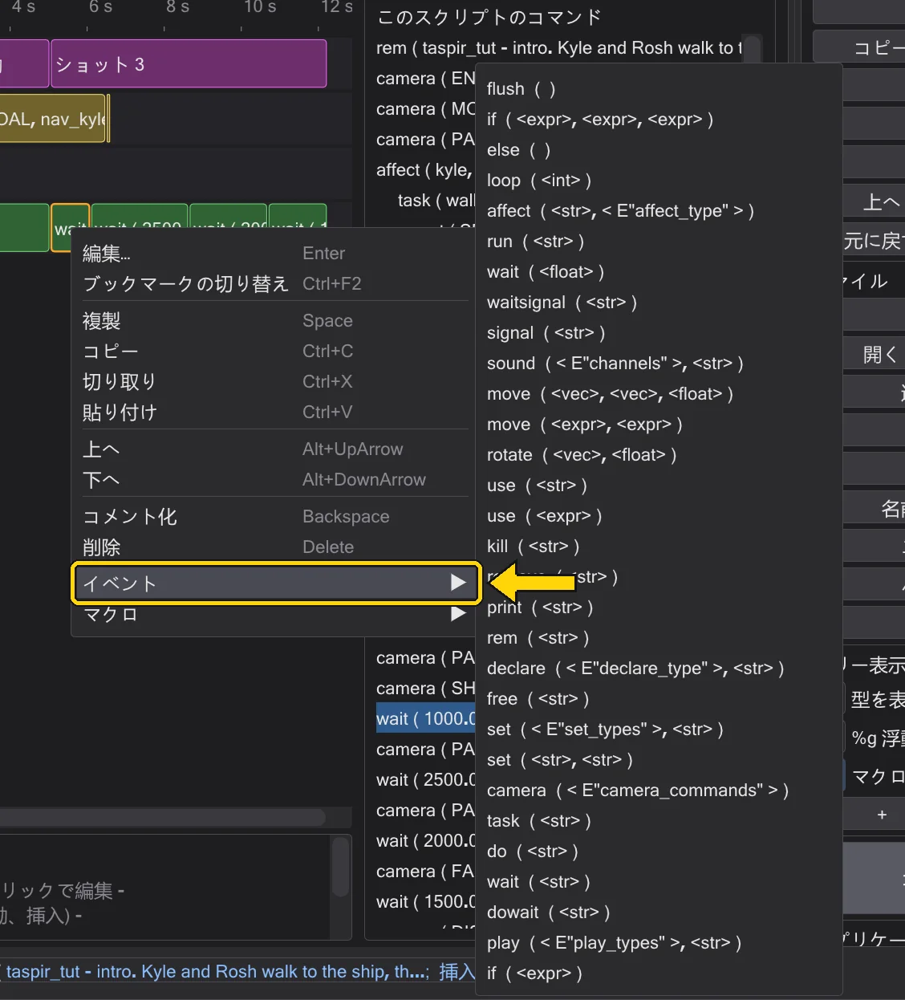
ブロックのメニューと、そのイベントのサブメニュー。


知っておくと便利#
- 一覧のコマンドにマウスを重ねると、何をするかが読めます。
- 一覧の最後にあるマクロは、複数のコマンドを一度に追加します。例えば
walkOnly。